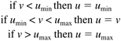
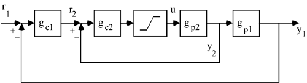

| [ Team LiB ] |
|
11.2 Antireset WindupReset (Integral) WindupThe phenomenon of reset windup occurs when a controller with integral action operates with the manipulated variable at a constraint for a period of time. When the manipulated input hits the constraint, the integral term in a PID controller continues to accumulate the error, requesting more and more manipulated variable action; the manipulated input cannot increase, however, since it is already constrained. Owing to this integral windup, the manipulated variable may stay saturated longer than is necessary. A block diagram for a process with manipulated input constraints is shown in Figure 11-1a, where v represents the unconstrained input from the controller, while u represents the actual constrained input implemented on the process. The "saturation" element detailed in Figure 11-1b, has the following mathematical description  Figure 11-1. Representation of a process with a constrained input.The effect of reset windup is illustrated in the following example. Example 11.1: Illustration of Reset WindupConsider the first-order process, where the time unit is minutes. Here we compare two processes: where the manipulated input is unconstrained, and where the manipulated input is constrained between –1 and 1. Assuming deviation variable form and an initial steady-state output of 0, we know that the constrained process cannot achieve a steady-state output change of greater than 0.5. Here we tune the PI controller for a closed-loop response time of 0.25 minutes. The controller gain and integral time parameter values are kc = 8, tI = 1 min. Figure 11-2 compares the input and output responses for a setpoint change of 0.4 in both the constrained and unconstrained control systems. The process output for the constrained system exhibits overshoot, while the unconstrained system has the expected first-order closed-loop response. The overshoot is due to reset windup. Notice the constrained manipulated input stays saturated for 2 minutes, although the output is above the setpoint after 1.5 minutes (after the setpoint change). Figure 11-2. Comparison of unconstrained and constrained responses to a step setpoint change.A SIMULINK block diagram for this problem is shown in Section 11.7. For small setpoint changes (say, ±0.1) you should find that reset windup is not a problem. You should show that as the setpoint change approaches 0.5 (remember, this is the maximum steady-state change that can be handled by the process, owing to the input constraints), the reset windup effect becomes worse. See Exercise 2. Antireset Windup (ARW) TechniquesThere are a number of ways that have been developed to minimize problems with reset windup. Two ways are compared with the standard PI algorithm in Figure 11-3. Figure 11-3a shows the standard PI algorithm in block diagram form, with a saturation element to represent the manipulated input constraints. It is clear that there is no feedback to the algorithm to prevent the unconstrained input v from changing due to integration of the error signal. The "back-calculating" ARW strategy is shown in Figure 11-3b. Here, the difference between the ideal (unconstrained) input v and the actual (constrained) input u is fed-back to the integrator. The resetting time, tr, is an adjustable parameter that is normally set equal to the integral time, tI. The first-order feedback method of implementing integral action is shown in Figure 11-3c. For a resetting time equal to the integral time, the two antiwindup strategies (Figures b and c) yield the same closed-loop performance. Figure 11-3. Various forms of PI control. (a) Standard PI control without windup compensation. (b) Reset back-calculating. (c) First-order feedback. (b, c) Antiwindup strategies.
Example 11.2: Illustration of Reset Windup Compensation (ARW)A comparison of the antiwindup approach with the saturating PI strategy is shown in Figure 11-4, for the system given in Example 11.1. Note that the controller with antiwindup remains saturated for a much shorter time. Clearly, the antiwindup strategy is preferred. Figure 11-4. Comparison of antiwindup (ARW) and uncompensated responses for system in Example 11.1. The overshoot in the uncompensated system is due to reset (integral) windup.Reset windup can be particularly problematic in cascade-control systems, particularly when batch processes are involved. This is illustrated by the cascade-control block diagram shown in Figure 11-5. The outer loop (primary control loop) of a cascade strategy is normally tuned for much slower dynamics than is the inner loop (secondary control loop). If the inner loop performs more slowly than expected, due to constraints on the manipulated input for example, the performance of the outer loop controller may suffer. In this case external windup protection can be provided, as shown in the following example. Figure 11-5. Series representation of a cascade-control system with saturation limits on the manipulated input. Example 11.3: Cascade Control of a CSTRA physical example (temperature control of a jacketed CSTR) is shown in Figure 11-6. The output of the primary controller (reactor temperature) is the setpoint to the inner-loop controller. The manipulated variable for the secondary loop is the jacket flow rate. If the flow rate becomes constrained, or if the jacket temperature controller is not tuned tightly, the jacket temperature will not closely match its setpoint, causing problems with the integral action in the primary loop. Figure 11-6. Cascade-control applied to a CSTR.For simplicity, let the primary and secondary processes be represented by the following first-order transfer functions, and assume IMC-based PI tuning, where the secondary process dynamics were neglected in the design of the primary controller. Closed-loop time constants of 10 and 2 minutes were used for the primary and secondary loops, respectively. The manipulated input is assumed to saturate at ±3. The primary and secondary tuning parameters are then We first perform a simulation with antiwindup on the secondary control loop, since the jacket flow rate is constrained. The response to a unit setpoint change is shown in Figure 11-7. Notice that there is still some windup involved, causing overshoot of the primary process output. This is because the output of the primary controller is a setpoint to the secondary controller. The secondary controller does not track its setpoint very well because of the saturation of the manipulated input. This is shown clearly in the middle plot of Figure 11-7. Figure 11-7. Performance of antiwindup secondary controller. The primary controller output (jacket temperature setpoint) differs substantially from the secondary measurement (jacket temperature).Improved performance can be obtained using an external input to the primary controller. The basic idea is illustrated in Figure 11-8 for the reactor temperature (master) controller, where the controller output is the jacket temperature setpoint. Here the jacket temperature (actual manipulated input) is compared with the jacket temperature setpoint (ideal manipulated input). If the jacket temperature is not equal to its setpoint, some of the integral action is "removed" by corrective feedback action. The improved cascade control, with antiwindup (Figure 11-3c) on the secondary loop and external resetting antiwindup (Figure 11-8) on the primary loop, has excellent performance, as shown in Figure 11-9. There is now no overshoot in the primary process output (reactor temperature). The external reset windup protection is shown as a signal between the measured jacket temperature and the reactor temperature controller, on the control instrumentation diagram in Figure 11-10. Figure 11-8. Reactor temperature controller with external variable reset.Figure 11-9. Performance of CSTR cascade control with antiwindup protection on both controllers. The external ARW control strategy of Figure 11-8 is implemented on the reactor temperature controller.Figure 11-10. Cascade-control applied to a CSTR. The reactor temperature controller has external antireset windup (ARW) protection based on a measurement of the jacket temperature.It should be noted that antiwindup protection can also be provided by using the "velocity form" in a digital control system. This is discussed in Module 16. |
| [ Team LiB ] |
|